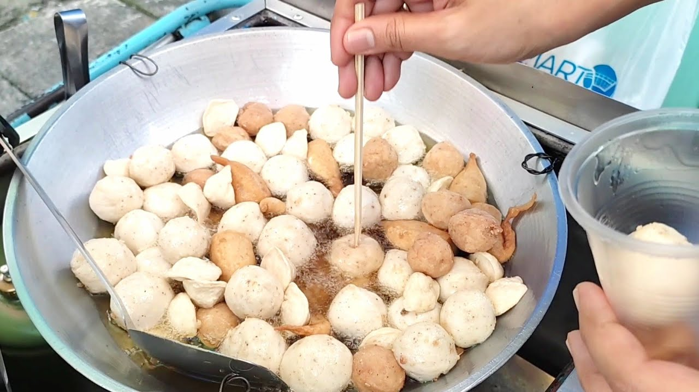
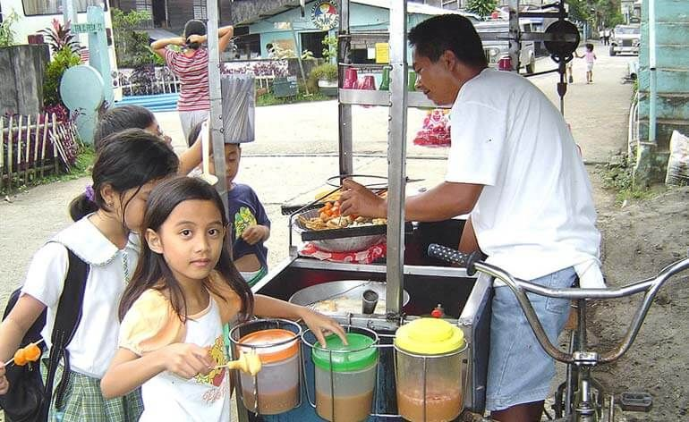
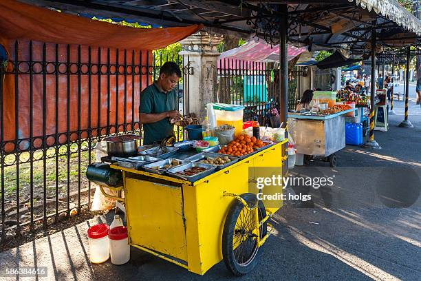

Ang Buhay Kalsada
Ang pagkain sa kanto ay hindi lang pampabusog; ito ay sining, tradisyon, at kwentuhan sa bawat tusok.
Sining ng Sawsawan
Dito sa kalsada, ang sawsawan ay sagrado. May kanya-kanyang timpla: ang matamis-tamis na 'Manong Sauce', ang sukang maanghang na may sili at sibuyas, at ang pinaghalong 'kalahati'. Ang tamang timpla ang nagbibigay-buhay sa bawat kagat.

The Tusok Etiquette
Isang unwritten rule: bawal ang "double dipping"! Ang pagtusok sa kawali ay simbolo ng pagtitiwala at pakikipagkapwa-tao sa gitna ng usok at saya.

Ang "Golden Hour"
Tuwing alas-kwatro ng hapon, ang kalsada ay nagiging higanteng kusina. Ang tunog ng mga tricycle at ang usok ng uling ay hudyat na oras na ng meryenda.

Mga Bayani ng Kanto
Sila ang mga tinderong laging naka-abang sa bawat kanto—handang magbigay ng init at ligaya sa gitna ng pagod. Mula sa tawa ni Manong hanggang sa kwento ni Aling Nena, sila ang tunay na puso ng ating meryenda.